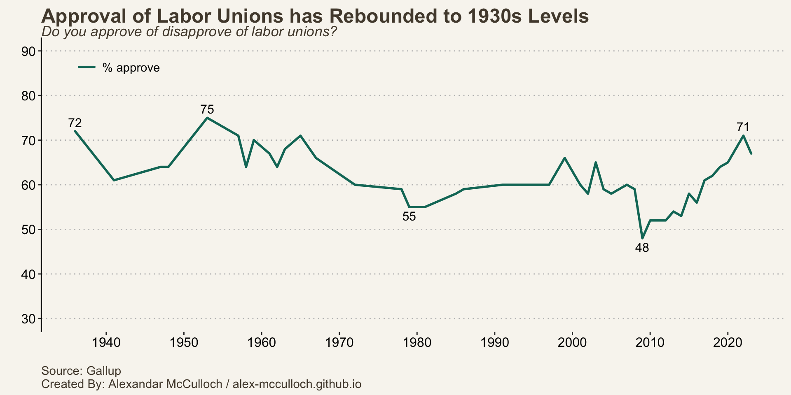
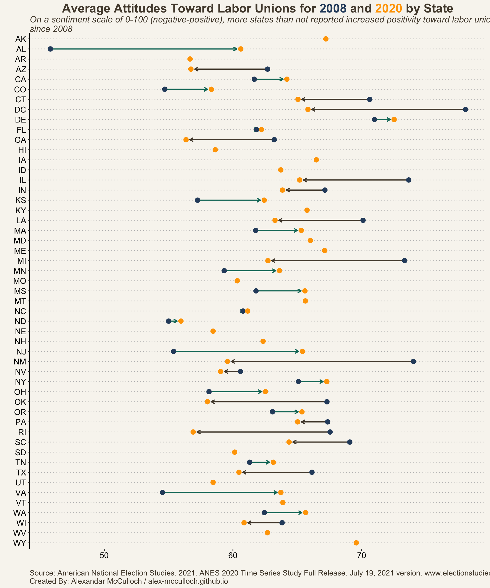
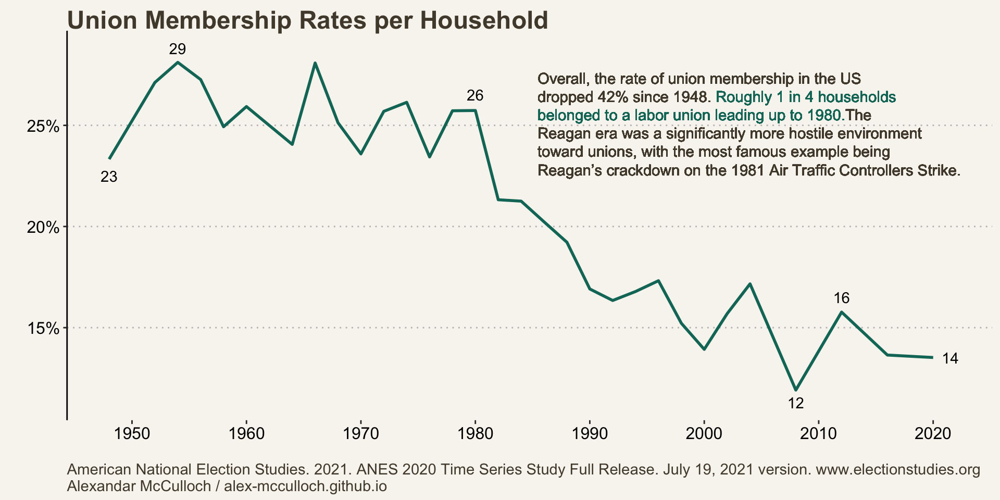
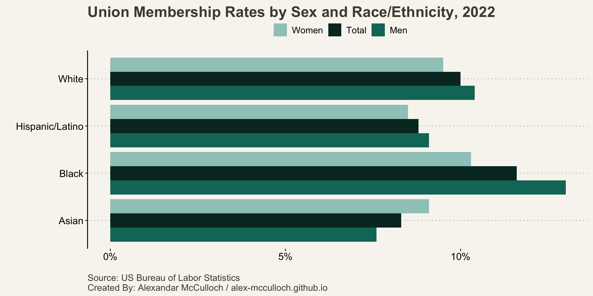

On Tuesday, September 26th, Joe Biden became the first sitting president to join a picket line of a striking union. This move is significant, and there seems to be little downside to it, especially considering the evolving attitudes of Americans toward unions over the past decade. Public sentiment has been increasingly favorable towards unions, reflecting a broader warming trend in how Americans perceive organized labor.
The Average Partisan Harbors Positive Sentiments Towards Labor Unions
On a sentiment scale of 0-100 (negative-positive), Americans across the partisan divide tend to adopt positive attitudes toward labor unions, consistently reporting scores above the midpoint of 50. There are still notable disparities in these sentiments across party lines. Democrats generally exhibit more favorable views of unions compared to their Republican and independent counterparts. One particularly stark divide emerged in 2012 when Republicans at the state level enacted legislation aimed at curbing the bargaining power of unions. During this year, Republicans registered a score below 50 for the first time since 1988. However, by the subsequent presidential election, the average Republican had shifted to a more positive stance toward labor unions.
In a deeply polarized political landscape, it’s not unexpected to observe patterns of partisan division on various issues. As polarization has intensified, partisans have increasingly adopted opposing positions on a wide range of topics, a phenomenon known as conflict extension. However, interestingly, Americans seem to be influenced by their temporal context in a somewhat similar manner. Sentiment scores for the average Democrat, Independent, and Republican all experienced a decline in 2012 before rebounding by 2020. Partisanship is a strong predictor of attitudes, but that does not mean partisans are immune from the current trends.
Approval of Labor Unions has Steadily Increased for Over a Decade
The United States is currently witnessing a notable resurgence in labor union approval. Over the past decade, the favorable view of labor unions has seen a significant uptick, rising from 48% in 2009 to 67% as of August 2023. This trend reached its height in 2022 when approval ratings for labor unions soared to 71%, the highest since 1953.

The most significant increase in positive sentiment toward unions was observed among Alabamians, who saw their average score rise from 45.8 in 2008 to 60.6 in 2020. On the other hand, New Mexico experienced the most substantial decline in sentiment, moving from 74 in 2008 to 59.5 in 2020. Among the 33 states plus the District of Columbia that reported data for both 2008 and 2020, a total of 16 states witnessed a decrease in sentiment scores. These states are distributed across various regions, including the South, Midwest, Southwest, and Northeast. However, it’s worth noting that many of these states initially reported extremely positive feelings about unions, potentially indicating a ceiling effect. Additionally, it’s important to highlight that no state’s average score fell below the neutral 50-point threshold, with the lowest scores recorded in Rhode Island and Georgia, both reporting an average sentiment score of 56 in 2020.

Union Membership has Stagnated Since 2000
In the 1950s, over one-quarter of American households reported union membership. That number is now down to 13.5% in 2020. Most of this decline occurred between 1980 (25.7%) and 2000 (13.9%), a period defined by strong neo-liberal sentiment and Republican leadership.

Black Men Lead Other Demographics in Union Membership
Nearly 12% of Black Americans were members of a labor union in 2022. That’s 2 points higher than White Americans who are second on this list. It was Black men in particular who led the pack, with 13% being members.

When it comes to union membership rates, men, in general, have a higher rate compared to their female counterparts, except for Asian workers. Asian women held a slightly higher union membership rate at 9.1%, surpassing Asian men, who had a rate of 7.6%.
Biden’s decision to join the picket lines on Tuesday could potentially strengthen his relationship with Black voters and blue-collar workers, two groups with which he has faced challenges in maintaining enthusiasm recently.
Furthermore, a strong majority of Americans support labor unions, including Democrats, Independents, and Republicans. The US is experiencing a resurgence in union popularity and action (see WGA and SAG-AFTRA strikes). Given its growing popularity across partisanship, race, and gender, it would be wise for candidates to get ahead of this movement prior to 2024.
Citation
BibTeX citation:
@online{mcculloch2023,
author = {McCulloch, Alexandar},
title = {Attitudes {Towards} {Labor} {Unions} Have {Warmed} {Since}
2008},
date = {2023-09-27},
url = {https://alex-mcculloch.github.io/posts/2023-09-27-Union-Attitudes/},
langid = {en}
}
For attribution, please cite this work as:
McCulloch, Alexandar. 2023. “Attitudes Towards Labor Unions Have
Warmed Since 2008.” September 27, 2023. https://alex-mcculloch.github.io/posts/2023-09-27-Union-Attitudes/.